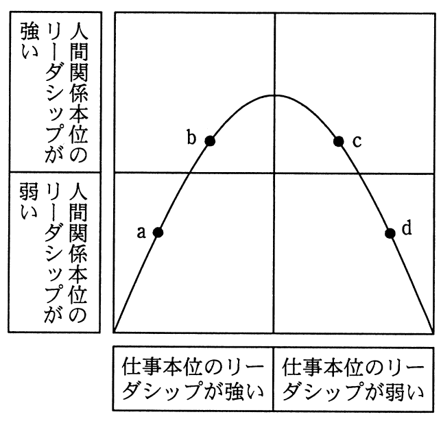

リーダシップのスタイルは，その組織の状況に合わせる必要がある。組織とリーダシップの関係に次のことが想定できるとすると，野球チームの監督のリーダシップのスタイルとして，図のdと考えられるものはどれか。
〔組織とリーダシップの関係〕
組織は発足当時，構成員や仕組みの成熟度が低いので，リーダが仕事本位のリーダシップで引っ張っていく。成熟度が上がるにつれリーダと構成員の人間関係が培われ，仕事本位から人間関係本位のリーダシップに移行していく。更に成熟度が進むと，構成員は自主的に行動でき，リーダシップは仕事本位，人間関係本位のいずれもが弱まっていく。

ア うるさく言うのも半分くらいで勝てるようになってきた。
イ 勝つためには選手と十分に話し合って戦略を作ることだ｡
ウ 勝つためには選手に戦術の立案と実行を任せることだ｡
エ 選手をきちんと管理することが勝つための条件だ｡